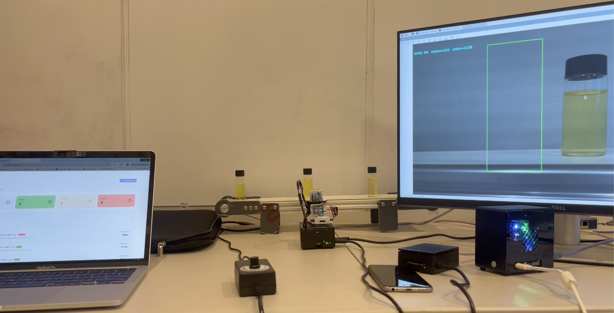

System Overview

System Architecture
Edge compute pipeline and sensor integration

Manufacturing Line
Pharmaceutical production environment

AI Inference
We fine-tuned a pre-trained YOLO Classifier to detect cracks and whether vials were capped properly.
Demo Videos
Anomaly Detection Demo
Edge AI inference on pharmaceutical manufacturing line.
Placeholder Video 2
Placeholder Video
Add your video file to replace this placeholder
Placeholder Video 3
Placeholder Video
Add your video file to replace this placeholder
Results & Metrics
Detection Performance
Accuracy and latency benchmarks
Detected Anomalies
Example defect classifications